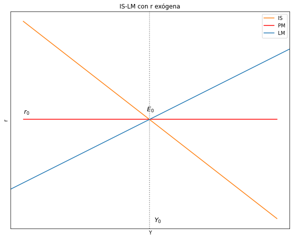
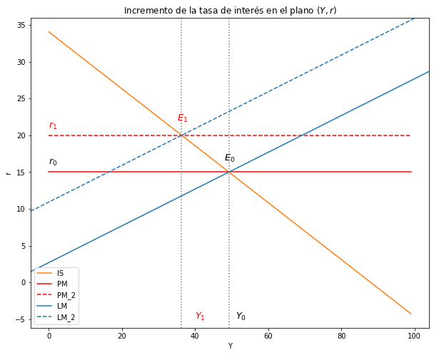
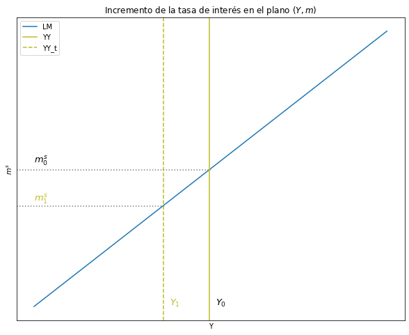
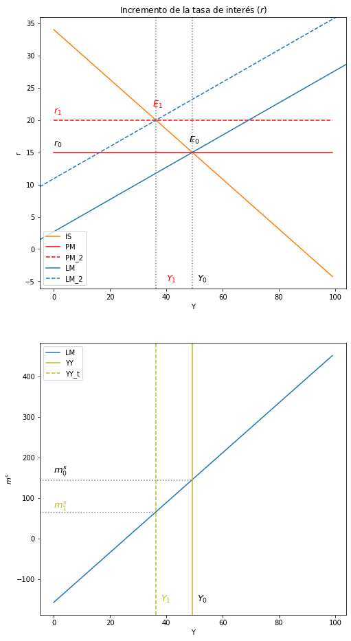
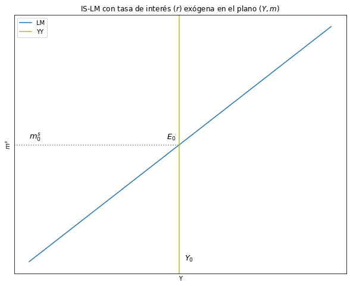
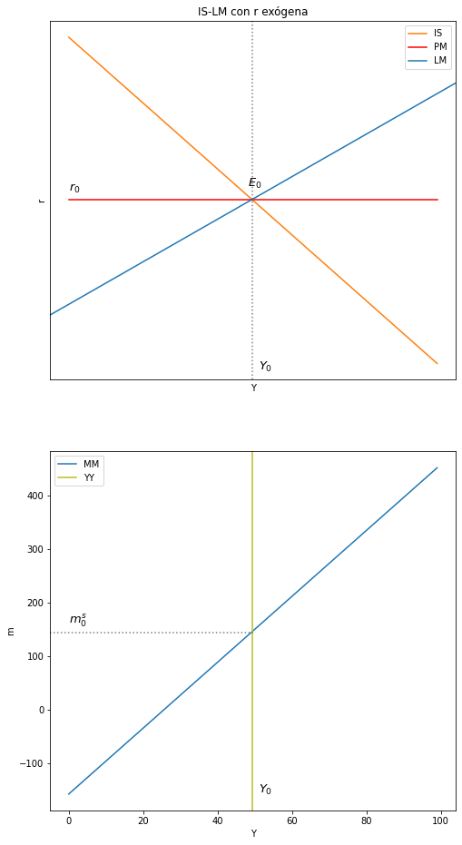

Modelo IS-LM con Tasa de Interés Exógena (r) fijada por el Banco Central:
Contents
import ipympl
%matplotlib widget
%matplotlib inline
import ipywidgets as widgets
import matplotlib.pyplot as plt
import numpy as np
import sympy as sy
from sympy import *
import pandas as pd
from causalgraphicalmodels import CausalGraphicalModel
import os
os.environ["PATH"] += os.pathsep + 'C:/Program Files/Graphviz/bin/'
from IPython.display import Image
import warnings
warnings.filterwarnings('ignore')
6. Modelo IS-LM con Tasa de Interés Exógena \((r)\) fijada por el Banco Central:#
6.1. Ecuaciones#
Ecuación de la IS:
Partiendo de:
\[ Y = C + I + G + X - M \]
donde
\[ C = C_0 + b(1-t)Y \]
\[ I = I_0 - hr \]
\[ G = G_0 \]
\[ X = X_0 \]
\[ M = mY \]
Reemplazando:
\[ Y = C_0 + b(1-t)Y + I_0 - hr + G_0 + X_0 - mY \]
La ecuación de la IS es en función de \(Y\) es:
\[ Y = \frac{1}{1 - (b - m)(1 - t)} (C_o + I_o + G_o + X_o - hr) \]
o,
\[ Y = \frac{1}{B_1} (B_0) \]
Donde \( B_0 = C_o + I_o + G_o + X_o - hr \) y \( B_1 = 1 - (b - m)(1 - t) \)
Ecuación de la LM:
\[ \frac{M_o^s}{P_0} = kY - jr \]
Ahora \(M^s\) es la variable endogena, por eso escribimos la LM En función de \((M^s)\):
\[ M^s = P_0(kY - jr) \]
6.2. Equilibrio IS-LM con \(r\) exógena#
Ingreso de equilibrio: es igual a la ecuación de la IS
\[ Y^e = \frac{1}{1 - (b - m)(1 - t)} (C_o + I_o + G_o + X_o - hr) \]
Masa monetaria: reemplazamos \(Y\) en \(M_s\):
\[ M^e_s = P_0(kY - jr) \]
\[ M^e_s = (\frac{B_0}{B_1})P_0k - P_0jr \]
\[ M^e_s = P_0k(\frac{1}{1 - (b - m)(1 - t)} (C_o + I_o + G_o + X_o - hr)) - P_0jr \]
6.3. Curva IS#
#--------------------------------------------------
# Curva IS
r_size = 100
Co = 13
b = 0.7
t = 0.25
Io = 6.4
Go = 5
h = 0.3
Xo = 2
m = 0.4
r = np.arange(r_size)
# Ecuación
def IS_CB(Co, b, t, Io, h, Xo, m, Go):
IS_CB = (1/(1 - (b - m)*(1 - t)))*(Co + Io + Go + Xo - h*r)
return IS_CB
IS_CB = IS_CB(Co, b, t, Io, h, Xo, m, Go)
6.4. Curva LM#
#--------------------------------------------------
# Curva LM
# Parámetros
Y_size = 100
P = 3.5
k = 1.76
j = 3
r = 15
Y = np.arange(Y_size)
# Ecuación
def LM_CB(Y, P, k, j, r):
LM_CB = P*(k*Y - j*r)
return LM_CB
LM_CB = LM_CB(Y, P, k, j, r)
6.5. Funcion para encontrar el cruce de rectas#
# líneas punteadas autómaticas
# definir la función line_intersection
def line_intersection(line1, line2):
xdiff = (line1[0][0] - line1[1][0], line2[0][0] - line2[1][0])
ydiff = (line1[0][1] - line1[1][1], line2[0][1] - line2[1][1])
def det(a, b):
return a[0] * b[1] - a[1] * b[0]
div = det(xdiff, ydiff)
if div == 0:
raise Exception('lines do not intersect')
d = (det(*line1), det(*line2))
x = det(d, xdiff) / div
y = det(d, ydiff) / div
return x, y
6.5.1. Encontrar puntos de cruce#
r_ec = np.full((100), 15)
# coordenadas de las curvas (x,y)
A = [IS_CB[0], Y[0]] # DA, coordenada inicio
B = [IS_CB[-1], Y[-1]] # DA, coordenada fin
C = [r_ec[0], Y[0]] # L_45, coordenada inicio
D = [r_ec[-1], Y[-1]] # L_45, coordenada fin
# creación de intersección
intersec_1 = line_intersection((A, B), (C, D))
intersec_1 # (y,x)
(15.000000000000002, 49.25)
6.6. Gráfico del modelo IS-LM-PM#
# Gráfico del modelo IS-PM
# Dimensiones del gráfico
y_max = np.max(Y)
fig, ax = plt.subplots(figsize=(10, 8))
# Curvas a graficar
ax.plot(IS_CB, label = "IS", color = "C1") #IS
ax.plot(r_ec, color = "red", label ="PM") #r: tasa de interés
plt.axvline(intersec_1[1], ymin= 0, ymax= 1, linestyle = ":", color = "grey")
plt.axline((intersec_1[1], intersec_1[0]), slope=0.25, color="C0", label = 'LM')
ax.yaxis.set_major_locator(plt.NullLocator())
ax.xaxis.set_major_locator(plt.NullLocator())
ax.text(0, 16, '$r_0$', fontsize = 13, color = 'black')
ax.text(51, -5, '$Y_0$', fontsize = 13, color = 'black')
ax.text(48, 16.5, '$E_0$', fontsize = 13, color = 'black')
ax.set(title="IS-LM con r exógena", xlabel= 'Y', ylabel= 'r')
ax.legend()
plt.show()

6.7. Estática comparativa#
# nombrar variables como símbolos
Co, Io, Go, Xo, h, b, m, t, P, k, j, r, beta_0, beta_1 = symbols('Co, Io, Go, Xo, h, b, m, t, P, k, j, r, beta_0, beta_1')
# # Beta_0 y beta_1
# beta_0 = (Co + Io + Go + Xo - h*r)
# beta_1 = (1-(b-m)*(1-t))
# Producto de equilibrio y la tasa de interes de equilibrio en el modelo IS-LM
Y_eq = (Co + Io + Go + Xo - h*r/(1-(b-m)*(1-t)))
Ms_eq = (Co + Io + Go + Xo - h*r/(1-(b-m)*(1-t)))*(P*k) - (P*j*r)
6.7.1. Incremento tasa de interés \((r)\)#
Matemática:
df_Y_eq_r = diff(Y_eq, r)
print("El Diferencial del Producto con respecto al diferencial de la tasa de interés = ", df_Y_eq_r)
El Diferencial del Producto con respecto al diferencial de la tasa de interés = -h/(-(1 - t)*(b - m) + 1)
¿\(∆Y\) sabiendo que \(∆r > 0\)?
\[ \frac{∆Y}{∆r} = (-) \]
\[ \frac{∆Y}{(+)} = (-) \]
\[ ∆Y = (-) \]
df_Ms_eq_r = diff(Ms_eq, r)
print("El Diferencial de la Masa Monetaria con respecto al diferencial de la tasa de interés = ", df_Ms_eq_r)
El Diferencial de la Masa Monetaria con respecto al diferencial de la tasa de interés = -P*h*k/(-(1 - t)*(b - m) + 1) - P*j
¿\(∆M^s\) sabiendo que \(∆r > 0\)?
\[ \frac{∆M^s}{∆r} = (-) \]
\[ \frac{∆M^s}{(+)} = (-) \]
\[ ∆M^s = (-) \]
Intuición:
\[ r↑ → I↓ → DA↓ → DA < Y → Y↓ \]
\[ r↑ → M^d<M^s → M^s↓ \]
Gráfico:
#--------------------------------------------------
# Curva IS
r_size = 100
Co = 13
b = 0.7
t = 0.25
Io = 6.4
Go = 5
h = 0.3
Xo = 2
m = 0.4
r = np.arange(r_size)
# Ecuación
def IS_CB(Co, b, t, Io, h, Xo, m, Go):
IS_CB = (1/(1 - (b - m)*(1 - t)))*(Co + Io + Go + Xo - h*r)
return IS_CB
IS_CB = IS_CB(Co, b, t, Io, h, Xo, m, Go)
#--------------------------------------------------
# Curva LM
# Parámetros
Y_size = 100
P = 3.5
k = 1.76
j = 3
r = 15
Y = np.arange(Y_size)
# Ecuación
def LM_CB(Y, P, k, j, r):
LM_CB = P*(k*Y - j*r)
return LM_CB
LM_CB = LM_CB(Y, P, k, j, r)
#---------------------------------------------------
# Nueva LM
r = 20
def LM_CB_2(Y, P, k, j, r):
LM_CB_2 = P*(k*Y - j*r)
return LM_CB_2
LM_CB_2 = LM_CB_2(Y, P, k, j, r)
r_ec = np.full((100), 15)
# coordenadas de las curvas (x,y)
A = [IS_CB[0], Y[0]] # DA, coordenada inicio
B = [IS_CB[-1], Y[-1]] # DA, coordenada fin
C = [r_ec[0], Y[0]] # L_45, coordenada inicio
D = [r_ec[-1], Y[-1]] # L_45, coordenada fin
# creación de intersección
intersec_1 = line_intersection((A, B), (C, D))
intersec_1 # (y,x)
(15.000000000000002, 49.25)
r_ec_2 = np.full((100), 20)
# coordenadas de las curvas (x,y)
A = [IS_CB[0], Y[0]] # DA, coordenada inicio
B = [IS_CB[-1], Y[-1]] # DA, coordenada fin
C = [r_ec_2[0], Y[0]] # L_45, coordenada inicio
D = [r_ec_2[-1], Y[-1]] # L_45, coordenada fin
# creación de intersección
intersec_2 = line_intersection((A, B), (C, D))
intersec_2 # (y,x)
(20.0, 36.333333333333336)
# Gráfico del modelo IS-PM
# Dimensiones del gráfico
y_max = np.max(Y)
fig, ax = plt.subplots(figsize=(10, 8))
# Curvas a graficar
ax.plot(IS_CB, label = "IS", color = "C1") #IS
ax.plot(r_ec, color = "red", label ="PM") #r: tasa de interés
ax.plot(r_ec_2, color = "red", label ="PM_2", linestyle = 'dashed') #r: tasa de interés
plt.axline((intersec_1[1], intersec_1[0]), slope=0.25, color="C0", label = 'LM')
plt.axline((intersec_2[1], intersec_2[0]), slope=0.25, color="C0", label = 'LM_2', linestyle = 'dashed')
plt.axvline(x=intersec_1[1], ymin= 0, ymax= 1, linestyle = ":", color = "grey")
plt.axvline(x=intersec_2[1], ymin= 0, ymax= 1, linestyle = ":", color = "grey")
ax.text(0, 16, '$r_0$', fontsize = 13, color = 'black')
ax.text(51, -5, '$Y_0$', fontsize = 13, color = 'black')
ax.text(48, 16.5, '$E_0$', fontsize = 13, color = 'black')
ax.text(0, 21, '$r_1$', fontsize = 13, color = 'red')
ax.text(40, -5, '$Y_1$', fontsize = 13, color = 'red')
ax.text(35, 22, '$E_1$', fontsize = 13, color = 'red')
ax.set(title="Incremento de la tasa de interés en el plano $(Y, r)$", xlabel= 'Y', ylabel= 'r')
ax.legend()
plt.show()

# Gráfico del modelo IS-PM
# Dimensiones del gráfico
y_max = np.max(Y)
fig, ax = plt.subplots(figsize=(10, 8))
# Curvas a graficar
ax.plot(LM_CB, label = "LM", color = "C0") #LM
plt.axvline(x=intersec_1[1], ymin= 0, ymax= 1, color = "C8", label = 'YY')
plt.axvline(x=intersec_2[1], ymin= 0, ymax= 1, color = "C8", label = 'YY_t', linestyle = 'dashed')
plt.axhline(y=145, xmin= 0, xmax= 0.5, color = "grey", linestyle = ':')
plt.axhline(y=65, xmin= 0, xmax= 0.38, color = "grey", linestyle = ':')
ax.text(0, 160, '$m_0^s$', fontsize = 13, color = 'black')
ax.text(51, -155, '$Y_0$', fontsize = 13, color = 'black')
ax.text(0, 75, '$m_1^s$', fontsize = 13, color = 'C8')
ax.text(38, -155, '$Y_1$', fontsize = 13, color = 'C8')
ax.yaxis.set_major_locator(plt.NullLocator())
ax.xaxis.set_major_locator(plt.NullLocator())
ax.set(title="Incremento de la tasa de interés en el plano $(Y, m)$", xlabel= 'Y', ylabel= '$m^s$')
ax.legend()
plt.show()

# Dos gráficos en un solo cuadro
fig, (ax1, ax2) = plt.subplots(2, figsize=(8, 16))
#---------------------------------
# IS_PM
# Curvas a graficar
ax1.plot(IS_CB, label = "IS", color = "C1") #IS
ax1.plot(r_ec, color = "red", label ="PM") #r: tasa de interés
ax1.plot(r_ec_2, color = "red", label ="PM_2", linestyle = 'dashed') #r: tasa de interés
ax1.axline((intersec_1[1], intersec_1[0]), slope=0.25, color="C0", label = 'LM')
ax1.axline((intersec_2[1], intersec_2[0]), slope=0.25, color="C0", label = 'LM_2', linestyle = 'dashed')
ax1.axvline(x=intersec_1[1], ymin= 0, ymax= 1, linestyle = ":", color = "grey")
ax1.axvline(x=intersec_2[1], ymin= 0, ymax= 1, linestyle = ":", color = "grey")
ax1.text(0, 16, '$r_0$', fontsize = 13, color = 'black')
ax1.text(51, -5, '$Y_0$', fontsize = 13, color = 'black')
ax1.text(48, 16.5, '$E_0$', fontsize = 13, color = 'black')
ax1.text(0, 21, '$r_1$', fontsize = 13, color = 'red')
ax1.text(40, -5, '$Y_1$', fontsize = 13, color = 'red')
ax1.text(35, 22, '$E_1$', fontsize = 13, color = 'red')
ax1.set(title="Incremento de la tasa de interés $(r)$", xlabel= 'Y', ylabel= 'r')
ax1.legend()
#---------------------------------
# YY-MM
ax2.plot(LM_CB, label = "LM", color = "C0") #LM
ax2.axvline(x=intersec_1[1], ymin= 0, ymax= 1, color = "C8", label = 'YY')
ax2.axvline(x=intersec_2[1], ymin= 0, ymax= 1, color = "C8", label = 'YY_t', linestyle = 'dashed')
ax2.axhline(y=145, xmin= 0, xmax= 0.5, color = "grey", linestyle = ':')
ax2.axhline(y=65, xmin= 0, xmax= 0.38, color = "grey", linestyle = ':')
ax2.text(0, 160, '$m_0^s$', fontsize = 13, color = 'black')
ax2.text(51, -155, '$Y_0$', fontsize = 13, color = 'black')
ax2.text(0, 75, '$m_1^s$', fontsize = 13, color = 'C8')
ax2.text(38, -155, '$Y_1$', fontsize = 13, color = 'C8')
ax2.set(xlabel= 'Y', ylabel= '$m^s$')
ax2.legend()
plt.show()

#--------------------------------------------------
# Curva LM
# Parámetros
Y_size = 100
P = 3.5
k = 1.76
j = 3
r = 15
Y = np.arange(Y_size)
# Ecuación
def LM_CB(Y, P, k, j, r):
LM_CB = P*(k*Y - j*r)
return LM_CB
LM_CB = LM_CB(Y, P, k, j, r)
# Gráfico del modelo IS-PM
# Dimensiones del gráfico
y_max = np.max(Y)
fig, ax = plt.subplots(figsize=(10, 8))
# Curvas a graficar
ax.plot(LM_CB, label = "LM", color = "C0") #IS
plt.axvline(x=intersec_1[1], ymin= 0, ymax= 1, color = "C8", label = 'YY')
plt.axhline(y=145, xmin= 0, xmax= 0.5, color = "grey", linestyle = ':')
ax.text(0, 160, '$m_0^s$', fontsize = 13, color = 'black')
ax.text(51, -155, '$Y_0$', fontsize = 13, color = 'black')
ax.text(45, 160, '$E_0$', fontsize = 13, color = 'black')
ax.yaxis.set_major_locator(plt.NullLocator())
ax.xaxis.set_major_locator(plt.NullLocator())
ax.set(title="IS-LM con tasa de interés $(r)$ exógena en el plano $(Y, m)$", xlabel= 'Y', ylabel= '$m^s$')
ax.legend()
plt.show()

# Dos gráficos en un solo cuadro
fig, (ax1, ax2) = plt.subplots(2, figsize=(8, 16))
#---------------------------------
# IS_PM
# Curvas a graficar
ax1.plot(IS_CB, label = "IS", color = "C1") #IS
ax1.plot(r_ec, color = "red", label ="PM") #r: tasa de interés
ax1.axvline(intersec_1[1], ymin= 0, ymax= 1, linestyle = ":", color = "grey")
ax1.axline((intersec_1[1], intersec_1[0]), slope=0.25, color="C0", label = 'LM')
ax1.yaxis.set_major_locator(plt.NullLocator())
ax1.xaxis.set_major_locator(plt.NullLocator())
ax1.text(0, 16, '$r_0$', fontsize = 13, color = 'black')
ax1.text(51, -5, '$Y_0$', fontsize = 13, color = 'black')
ax1.text(48, 16.5, '$E_0$', fontsize = 13, color = 'black')
ax1.set(title="IS-LM con r exógena", xlabel= 'Y', ylabel= 'r')
ax1.legend()
#---------------------------------
# YY-MM
ax2.plot(LM_CB, label = "MM", color = "C0") #IS
ax2.axvline(x=intersec_1[1], ymin= 0, ymax= 1, color = "C8", label = 'YY')
ax2.axhline(y=145, xmin= 0, xmax= 0.5, color = "grey", linestyle = ':')
ax1.yaxis.set_major_locator(plt.NullLocator())
ax1.xaxis.set_major_locator(plt.NullLocator())
ax2.text(0, 160, '$m_0^s$', fontsize = 13, color = 'black')
ax2.text(51, -155, '$Y_0$', fontsize = 13, color = 'black')
ax2.set(xlabel= 'Y', ylabel= 'm')
ax2.legend()
plt.show()

# nombrar variables como símbolos
Co, Io, Go, Xo, h, b, m, t, P, k, j, r, beta_0, beta_1 = symbols('Co, Io, Go, Xo, h, b, m, t, P, k, j, r, beta_0, beta_1')
# # Beta_0 y beta_1
# beta_0 = (Co + Io + Go + Xo - h*r)
# beta_1 = (1-(b-m)*(1-t))
# Producto de equilibrio y la tasa de interes de equilibrio en el modelo IS-LM
Y_eq = (Co + Io + Go + Xo - h*r/(1-(b-m)*(1-t)))
Ms_eq = (Co + Io + Go + Xo - h*r/(1-(b-m)*(1-t)))*(P*k) - (P*j*r)